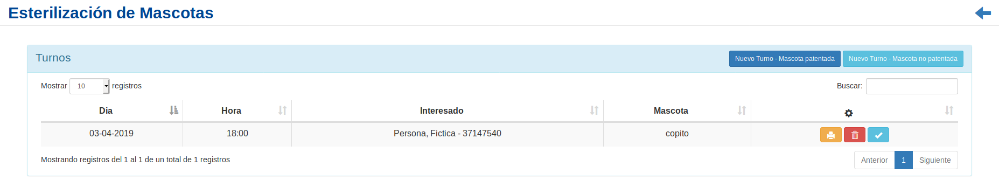
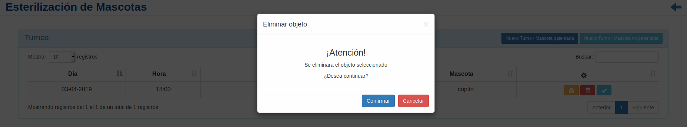
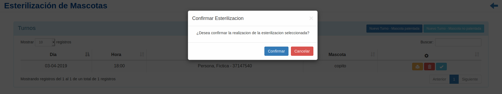
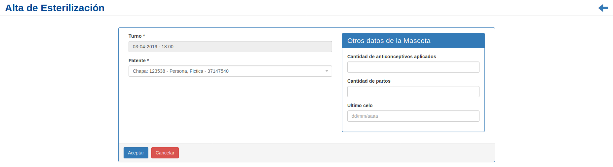
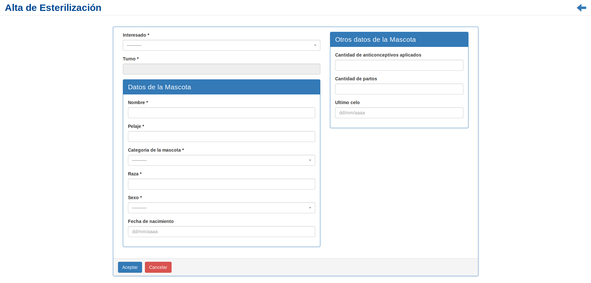

Esterilización¶
Se presentará una pantalla que contendrá un listado con todos las Esterilizaciones que se encuentren registradas en el sistema hasta la fecha.
Junto con el listado, se presentarán un conjunto de funcionalidades que permitirán manipular cada Esterilización.
Estas funcionalidades son:
Además, si el usuario desea Registrar un nuevo Turno:
Imprimir Consentimiento¶
Si el usuario desea imprimir el consentimiento informado para cirguía deberá seleccionar en la columna de acciones asociado a la Esterilización y presionar el íconoImprimir Consentimiento. A continuación, el sistema abrirá en una pestaña emergente, el formulario en formato «.pdf» para imprimir.
Eliminar Esterilización¶
Si el usuario desea eliminar una Esterilización, deberá seleccionar en la columna de acciones asociado a la Esterilización y presionar el ícono
Eliminar.Una vez realizado el paso anterior aparecerá la siguiente ventana emergente (modal):
En esta parte el usuario deberá decidir si confirma la eliminación del Turno o no. Si desea confirmar la eliminación deberá presionar el botón
Confirmar, caso contrario, presionará el botónCancelar.
Confirmar Esterilización¶
Si el usuario desea confirmar una Esterilización, deberá seleccionar en la columna de acciones asociado a la Esterilización y presionar el ícono
Confirmar realización.Una vez realizado el paso anterior aparecerá la siguiente ventana emergente (modal):
En esta parte el usuario deberá decidir si confirma la esterilización o no. Si desea confirmar la eliminación deberá presionar el botón
Confirmar, caso contrario, presionará el botónCancelar.
Nuevo Turno - Mascota patentada¶
Si el usuario desea crear un nuevo Turno de una mascota patentada, deberá presionar el botón
Nuevo Turno - Mascota patentada.A continuación el sistema lo redirigirá a la siguiente pantalla:
En esta parte el usuario se le presentará un formulario y deberá ingresar los datos solicitados para dar de alta un nuevo Turno.
Atención
El sistema siempre validará que la información ingresada sea correcta. En caso de que los datos ingresados sean incorrectos el sistema lo informará. En este punto, las posibles causas de errores son:
- Uno o más campos obligatorios vacíos.
- Uno o más campos con un formato incorrecto.
Una vez completado el formulario, se volverá a la pantalla que contendrá el listado de esterilizaciones.
Nuevo Turno - Mascota No patentada¶
Si el usuario desea crear un nuevo Turno de una mascota
Nopatentada, deberá presionar el botónNuevo Turno - Mascota No patentada.A continuación el sistema lo redirigirá a la siguiente pantalla:
En esta parte el usuario se le presentará un formulario y deberá ingresar los datos solicitados para dar de alta un nuevo Turno.
Atención
El sistema siempre validará que la información ingresada sea correcta. En caso de que los datos ingresados sean incorrectos el sistema lo informará. En este punto, las posibles causas de errores son:
- Uno o más campos obligatorios vacíos.
- Uno o más campos con un formato incorrecto.
Una vez completado el formulario, se volverá a la pantalla que contendrá el listado de esterilizaciones.